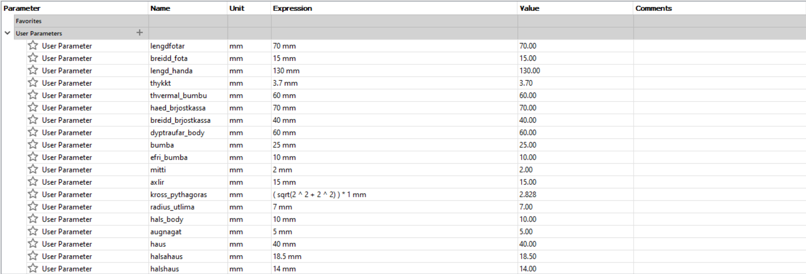
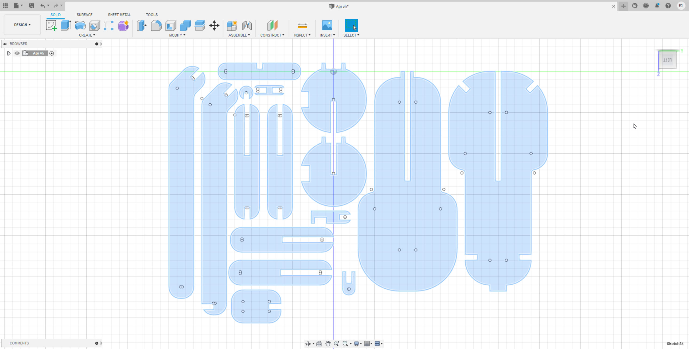
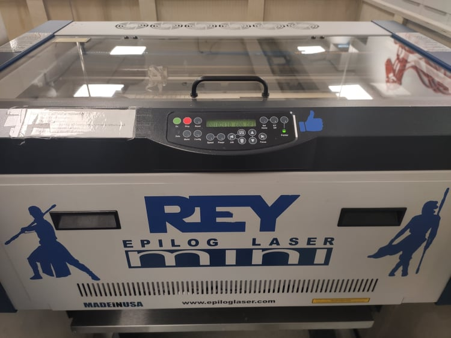
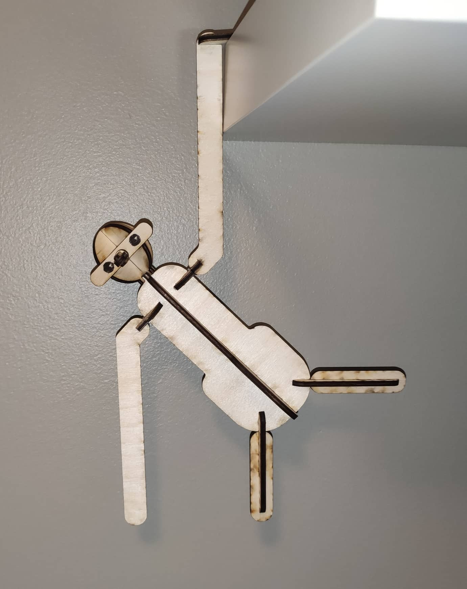
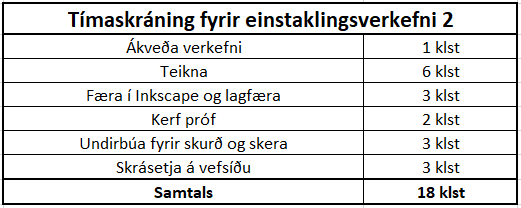

Verkefni 2 - Tölvustuddur skurður
Í þessu verkefni átti að hanna parametrískt, geirneglt (e. pressfit) módel af byggingareiningum. Módelið þurfti að vera skalanlegt þannig hægt væri að stilla kerf og efnisþykkt, ásamt stærðum á flötum, með því að vinna með parametrískar breytur.
Undirbúningur
Það fyrsta sem gera þurfti var að ákveða hvað átti að hanna og skera út. Sjálf er ég mikill minimalisti og þoli ekki að eiga auka drasl. Ég vildi því leggja ríka áherslu á að hanna eitthvað sem annaðhvort hefði notagildi, eða eitthvað fallegt sem væri gaman að hafa í umhverfi sínu. Ég lagði höfuðið í bleyti í dágóða stund þar til ég var komin með góða hugmynd.
Hluturinn sem ég ætlaði að hanna fylgdi seinna gildinu, að vera fallegur og veita ánægju. Ég ákvað að hanna apa og notaði fræga apann frá Kay Bojesen sem innblástur. Hann má sjá á myndinni hér að neðan

Ég ákvað að vera ekki að leita að hve stór apinn væri frá KB og nota frekar eigin lengdir sem mér þótti hæfilegar hverju sinni. Ég hófst því handa við hönnunina vopnuð gömlu góðu reglustikunni.
Áður en ég gat byrjað að hanna hlutinn þurfti ég að ná í viðeigandi hugbúnað. Ég náði annarsvegar í Fusion360. Nemendaútgáfan var fáanleg frítt í 2 ár, svo lengi sem maður sýndi fram á staðfestingu á skólavist. Það eina sem ég þurfti að gera var að setja inn mynd af stúdentakortinu mínu og þá var hugbúnaðurinn tilbúinn til niðurhals.
Einnig þurfti ég að sækja vigra-hugbúnað fyrir laserskurðinn. Kennarinn benti á að nota Inkscape sem ég náði í. Auðvelt var að finna útgáfu af kerfinu fyrir sitt stýrikerfi á vefsíðu hugbúnaðarins.
Hönnun
Eftir nokkrar vangaveltur og teikningar á blað opnaði ég Fusion360 og hafðist handa við að hanna apann.
Módelið átti að vera parametrískt og því var það fyrsta sem gert var að setja inn parametra fyrir stærðir á hinum ýmsu víddum apans. Á myndinni hér að neðan má sjá þá parametra sem notaðir voru.
Eftir að búið var að teikna alla líkamshluta apans þurfti að setja alla partana í sama plan til að undirbúa módelið fyrir laserskurð. Til þess notaði ég þetta myndband. Útkoman var eftirfarandi:
Nú var kominn tími á að framkvæma þann hluta verkefnisins sem var hópverkefni. Í honum átti að velja sér laserskera og reikna kerf fyrir hann. H'ER má lesa um hópverkefni 1.!!!
Eftir að hafa reiknað Kerf þurfti að bæta þeirri stærð inn sem parameter. Einnig mældum við þykkt nokkurra platna og komumst að því að hún var að meðaltali 3,7 mm en ekki 4 mm. Gildinu á parameternum thykkt var því sömuleiðis breytt í 3,7. Til að bæta kerf-inu inn á teikninguna notaði maður svo "Offset" skipunina. Þá valdi maður alla hluta teikningarinnar sem sjá má á myndinni að ofan og "offset-aði" þá útá við um kerf stærðina.
Nú var teikningin tilbúin til að vera færð úr Fusion360 í Inkscape. Ég vistaði þessa teikninguna sem DXF skrá með því að hægri smella á teikninguna og velja "Save as DXF". Loks opnaði ég Inkscape og opnaði DXF skrána þar.
Í Inkscape þurfti að byrja á því að minnka línuþykkt teikningarinnar. Það var gert með því að velja "Object - Fill and Stroke - Stroke style" og stilla "Width" á 0,02 mm. Með þessu móti sá maður auðveldlega bæði innri og ytri línuna á hverjum hlut, því eftir að hafa offset-að voru nú tvær útlínur á hverjum hlut. Eyða þurfti innri línunni á hverjum hlut fyrir sig, vista svo skjalið sem pdf og setja það inn á USB-lykil.
Laserskurður
Nú var hluturinn tilbúinn til að vera skorinn út með laserskeranum. Laserskerinn sem ég notaði heitir REY og hann má sjá á myndinni hér að neðan.
Það fyrsta sem maður gerði var að tengja USB lykilinn við tölvu tengda laserskeranum og opna PDF skrána með teikningunni sinni. Þá valdi maður Ctrl-P og ýtti á properties og stillti inn þær stillingar sem laserskerinn þurfti fyrir það efni sem maður var að nota. Leiðbeiningar um stillingar má finna á veggnum á móti laserskeranum og í bæklingi hans.
Stilla þurfti meðal annars hæð og byrjunarpunkt skerans en allar leiðbeiningar um það má finna í bæklingi sem vanalega er að finna við hliðina á laserskeranum.
Þegar búið var að stilla laserskerann og setja inn viðeigandi stillingar í tölvunni valdi maður "Print" í tölvunni og "Go" á laserskeranum. Þá byrjaði skerinn að skera út hönnunina. Mynd af laserskeranum að vinna er hér að neðan:

Niðurstöður
Útkoman var svona kannski ekki alveg eins og einhverjir hefðu reiknað með eftir að hafa séð apann sem innblásturinn var sóttur í...
😂😂😂
Þrátt fyrir að apinn hafi komið pínu kjánalega út í útliti og í raun ekki mikið í líkingu við Kay Bojesen apann sem innblásturinn var sóttur í heppnaðist módelið samt mjög vel. Til dæmis var kerf-þykktin sem reiknuð var í hópaverkefninu mjög góð þannig að pressfit-ið féll mjög þétt og vel saman, alls ekki of þétt en alls ekki þannig að það ditti í sundur. Einnig pössuðu hlutirnir mínir vel saman og módelið pússlaðist saman eins og ég hafði hugsaði það. Mistökin sem ég gerði voru einfaldlega þau að ég pússlaði módelinu ekki saman í þrívídd í Fusion360 áður en ég skar það út. Þess vegna urðu útlitið og hlutföllin svona heldur skrautleg.
Tímaskráning
Ég hélt vel utanum þann tíma sem fór í þetta verkefni. Samantekt má sjá í töflunni hér að neðan:
